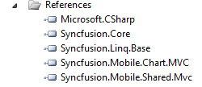

To add Reference Assemblies:
1. On the Solution Explorer, right-click the References folder.
2. Click Add Reference.

Figure 13: Add Reference option displayed on right-clicking the References Folder
 Note: - The Add Reference dialog box appears and
the .NET tab is highlighted by default. The assemblies for the MVC application
are listed here.
Note: - The Add Reference dialog box appears and
the .NET tab is highlighted by default. The assemblies for the MVC application
are listed here.

Figure 14: Add Reference Dialog Box
3. Select the following assemblies: Syncfusion.Core, Syncfusion.Linq.Base, Syncfusion.Mobile.Shared.Mvc, and Syncfusion.Mobile.Chart.Mvc
4. Click OK.
Note: -The selected assemblies are added under
References.

Figure 15: Selected Assemblies displayed under the References Folder